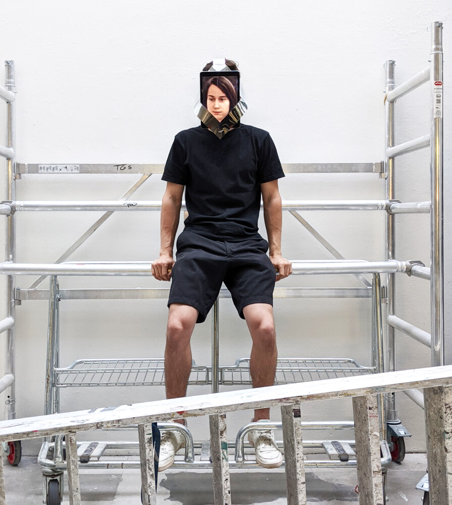
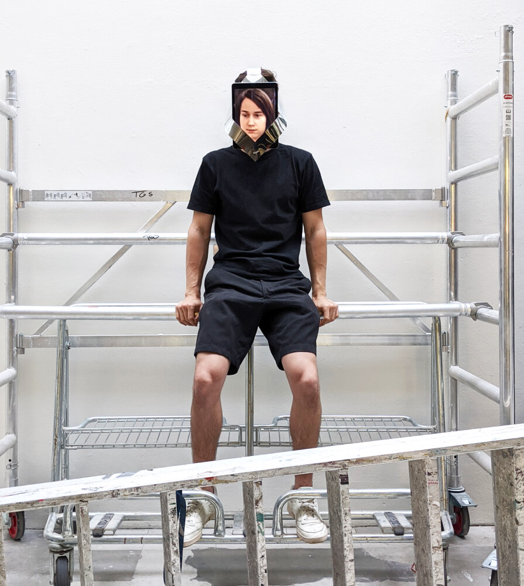
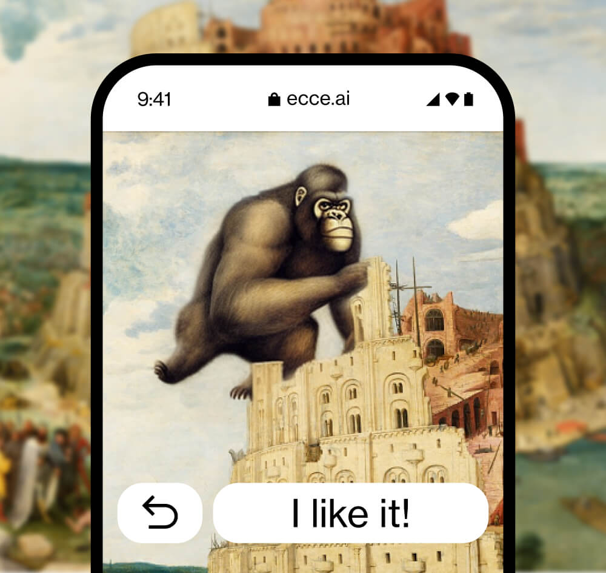
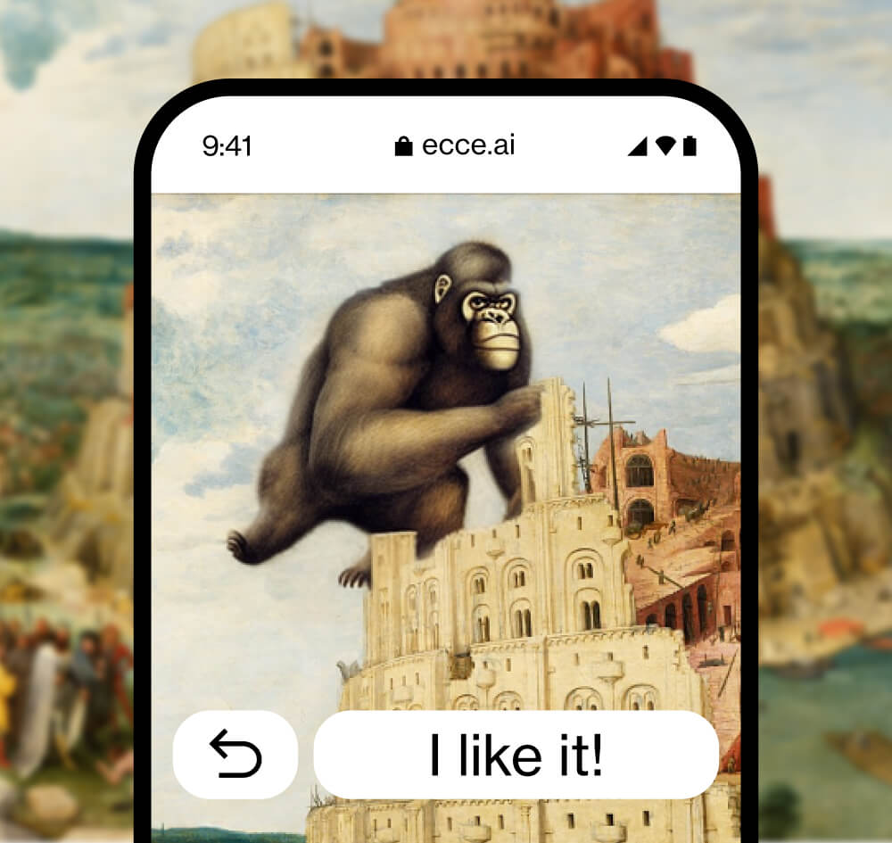

Interface for non-discriminatory music exploration


World music as a term for non-Western music was established in the 1980s. As a marketing term it stands for exoticism and Eurocentric thinking. Further, the leading digital platforms today are built in such a way that algorithms known for biases and filter bubbles determine what is consumed. Discovering new music becomes a passive experience where minorities stay under the radar.
For Not World Music, I scraped user ratings to determine outstanding albums from every country. This diverse collection can be explored freely on a Three.js based globe. The minimalist interface was connected to a streaming API for convenient but decelerated listening.
The project received awards by the DDC for value-based design and by the ADC in the category »Creative use of code«. ↳Website ↳Documentation Video
Generative compositions inspired by analog experiments


Experiencing time in a digital age


Distilling my past into a .pkl file
 

Using over 1400 images from my childhood as input, a generative adversarial network was trained. The output is a representation of me that retains some uncanny resemblance to my past selves. Accelerometer data is used to map the wearer’s movement in space to the latent space of the neural network.
This results in dynamic morphing between portraits that range in style from realistic to generative cubism. The juxtaposition of the fictional past and the futuristic present explores the impending changes to digital avatars, the reversibility of aging in virtual realms and the role of the human body in our society.
Turning dutch masterpieces into collective image creation playgrounds
 
